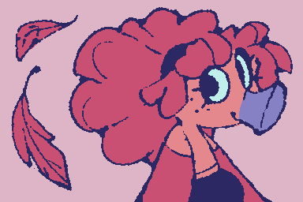
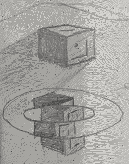
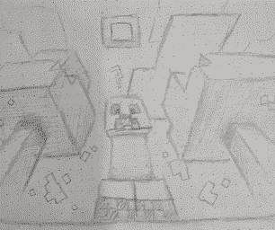
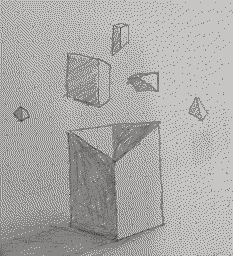

No, but it will appear in Staraway 2: Journey to Planet Suckulon 5
January 08, 2026
I can't really remember when I started drawing..... I guess I've been doing it for most of my life? But I think I only started drawing well in more recent years, and I actually only started drawing actual characters around early 2022. Before then, I drew a lot of Minecraft stuff and plenty of weird geometric doodles.
These ones were probably drawn around 2020:



I tend to dislike a lot of my old art, even if it was only made a year ago... I guess I change how I draw my characters over time, and so anything drawn more than like six months ago feels outdated haha. I'm most proud of art I've drawn pretty recently, which hopefully means I'm improving!!
My proudest work in general is definitely Staraway, even though it's not out yet. Other than that, it's hard to pick, but I'm pretty proud of some of the game jam projects I've worked on with other people, like Heliostudy and The Crumbly Fumbly. I gotta work on things with people more often...
January 08, 2026